Con particolare riferimento al non voto.
Premessa
Aggiorniamo qui lo studio pubblicato ad aprile 2024 con i dati relativi alle Europee e Comunali dell’8 e 9 giugno dell’anno in corso. Le tendenze su cui avevamo ragionato sono confermate e il dato dell’astensione è oltremodo confermato e preoccupante - è vero - anche a livello nazionale e oltre. Ci soffermeremo su alcuni dati che inseriremo negli schemi già strutturati nell’articolo precedente per evidenziare il dato di tendenza. Anche in questa occasione ci avvarremo di dati prodotti da Eligendo del Ministero degli Interni e dal sito dell’Amministrazione Comunale di Villapiana. Abbiamo anche recepito alcuni suggerimenti da parte dei lettori, sui quali diremo più avanti nel merito, in particolare per quanto attiene al voto dei residenti all’estero iscritti all’Aire.
Si consiglia vivamente di leggere prima l’articolo pubblicato in precedenza.
Il voto alle Europee
Il Grafico 1 illustra i risultati delle ultime tre tornate elettorali europee. Come è evidente i villapianesi votano in linea con il dato nazionale. È singolare l’analoga “altalena” del corpo elettorale se si aggiunge il dato delle politiche del 2018, con la seguente graduatoria del partito maggiormente votato: 2014: PD – 32% | 2018: M5S – 44% | 2019: Lega – 32% | 2024: FdI – 25%

I dati sull’astensione confermano quanto già evidenziato nell’articolo precedente. Il grafico 2 illustra il dato storico. Le ultime europee sono “agganciate” alle comunali (o viceversa) e questo porta ad un’affluenza maggiore, che tuttavia non si riflette nell’espressione del voto; in realtà il numero dei voti non espressi (astensione + bianche e nulle) è molto alto: 2004 = 1645; 2009 = 1679; 2014 =1624; 2019 =1598; 2024 = 1863.
I residenti all’estero con diritto di voto alle elezioni comunali.
Il valore numerico e percentuale di questi cittadini è significativo. È questo un dato che era venuto alla nostra attenzione, anche nel precedente articolo, ma che ho tenuto da parte volutamente non avendo a disposizione dati certi; in realtà il dato sarebbe ricavabile sottraendo dal numero degli elettori per le comunali, quello degli elettori per le politiche nazionali. Infatti i residenti all’estero eleggono loro candidati nelle circoscrizioni estere (votano in loco), mentre per esprimere il loro diritto di voto per le comunali devono recarsi nel Comune dove sono registrati (Aire). Il dato (così calcolato) non può, tuttavia essere preciso perché le date delle politiche e delle comunali non sono contestuali, ma differite. Per esempio alle politiche del 2022 gli elettori erano 4.213, mentre alle ultime comunali (2024) erano 4.882 [1] : i residenti all’estero con diritto di voto sono quindi 669? Riteniamo di no, il calcolo così impostato non è corretto: il corpo elettorale ha altre variabili che necessariamente devono entrare nel calcolo: cancellazioni per decessi o migrazione in altri comuni italiani, iscrizioni per raggiungimento maggiore età e migrazioni da altri comuni italiani. In parte queste variabili riguardano anche il corpo elettorale estero, ed inoltre 2 anni sono un arco temporale troppo ampio. Più congruo come raffronto risulterebbe il dato degli elettori per le europee, che risulterebbe anche più adeguato temporalmente. Infatti comunali ed europee coincidono come date dal 1999; tuttavia il corpo elettorale delle europee si diversifica da quello delle politiche, ed infatti la differenza nella tornata elettorale del 2024 è di 276 (quella del 2019 è di 201). Per fortuna su segnalazione del nostro amico Pasquale Falbo abbiamo a disposizione dei dati più congrui e comparabili [2], relativi al mese di febbraio 2024, che ci danno il numero di 545 residenti all’estero iscritti nei registri elettorali del Comune di Villapiana (11,3% del corpo elettorale).
È un dato, questo, di chiarezza, che “aumenta” il dato del corpo elettorale, ma che tuttavia non sposta di molto le nostre considerazioni sull’analisi dell’astensionismo. Anche se possiamo ipotizzare (per esperienza) che la stragrande maggioranza di loro non verranno mai a votare a Villapiana, non possiamo operare una forzatura nel calcolarli tout court “astensionisti”. Ad ogni modo, lasciamo sospeso il nostro giudizio al momento: abbiamo bisogno di più elementi conoscitivi. Importante è sapere che esiste la questione, così esemplificata: alle elezioni comunali di Villapiana [3] hanno diritto di voto anche un numero di residenti all’estero che computiamo nel numero medio di circa 550 unità, che difficilmente agiscono questo diritto per motivi oggettivi (distanza geografica e lontananza di interesse). Pur considerando quindi, il dato non scorporabile sul tema dell’astensionismo, evidenzieremo il dato dei voti espressi per gli eventuali confronti tra gli eletti.
Il Grafico 3, evidenzia che – attraverso la “forzatura” di calcolo degli iscritti Aire – il dato dell’astensionismo risulta comunque in crescita. Per maggiore chiarezza si veda anche la Tabella 1.
Grafico 3
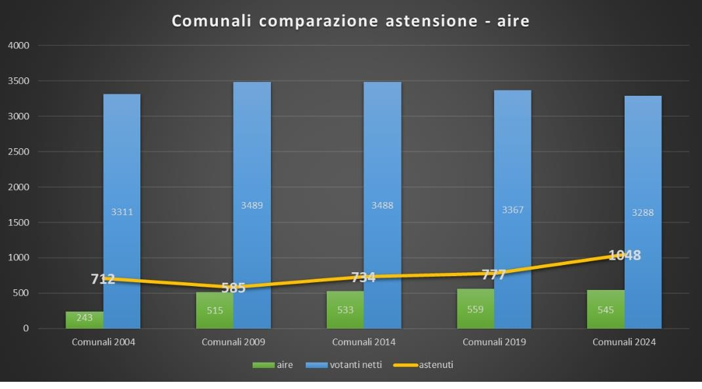
Tabella 1
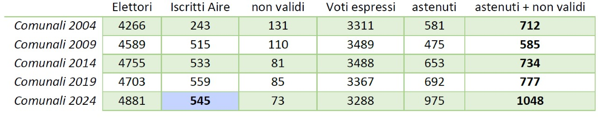

I Grafici 4 e 5 mostrano il “peso” della questione iscritti-aire e astensione alle Comunali del 2019 e del 2024, tenute presenti le considerazioni fatte in precedenza.

Ora, senza entrare più di tanto nel merito di una legge che dà dei diritti che molto difficilmente possono (o addirittura vogliono) essere espressi, segnaliamo che la questione che si pone è la seguente:
- Nel corpo elettorale per le comunali è presente un numero (ed una percentuale) di cittadini che molto difficilmente esprimono il loro diritto di voto (in molti casi si tratta di percorrere migliaia di chilometri a proprie spese);
- L’eventuale soluzione del voto telematico (auspicabile) non risolve alcune altre questioni: votare per un rappresentante politico nazionale (per la “nazione” per la quale ci si riconosce, quanto meno dal punto di vista ideale) non è la stessa cosa di votare per un rappresentante locale nell’ambito di un Comune, del quale – spesso – non ci si ricorda (o conosce) neanche la collocazione geografica. Ovviamente queste considerazioni vanno relativizzate con le distanze e le “lontananze”: un conto è l’Europa (Germania, Svizzera) e altra cosa è l’America (Argentina, Brasile, Stati Uniti).
Aggiornamento delle elezioni comunali con i risultati del 2024.
L’aggiornamento con gli ultimi dati di tabelle e grafici del precedente articolo ci portano ad ulteriori considerazioni, anche al netto dei dati discussi nel paragrafo sopra (iscritti AIRE).
La Tabella dati generali evidenzia quanto già ampiamente sostenuto nell’articolo precedente: è in corso una tendenza – anche a livello di elezioni comunali – di allontanamento dal voto da parte dei cittadini. Il dato tendenziale aumenta anche in occasione delle ultime elezioni comunali, e ciò ci sembra oltremodo preoccupante Tabella 2:
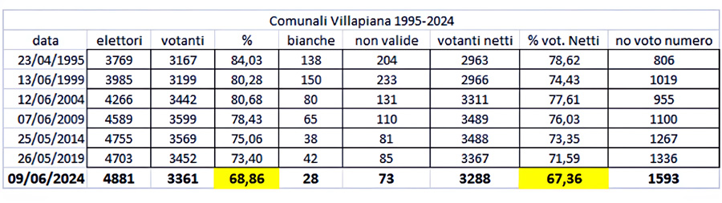
Nella Tabella 3, la prima colonna descrive numericamente il delta (differenza) tra 1° e 2°; la seconda colonna descrive numericamente la somma del risultato di eventuali altri candidati; la terza colonna riprende il dato del non voto dellaTabella 2:
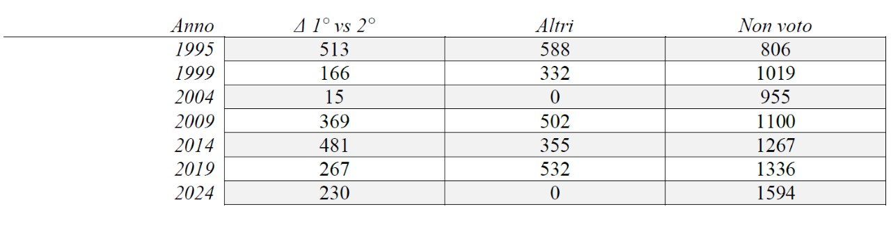
Grafico 6
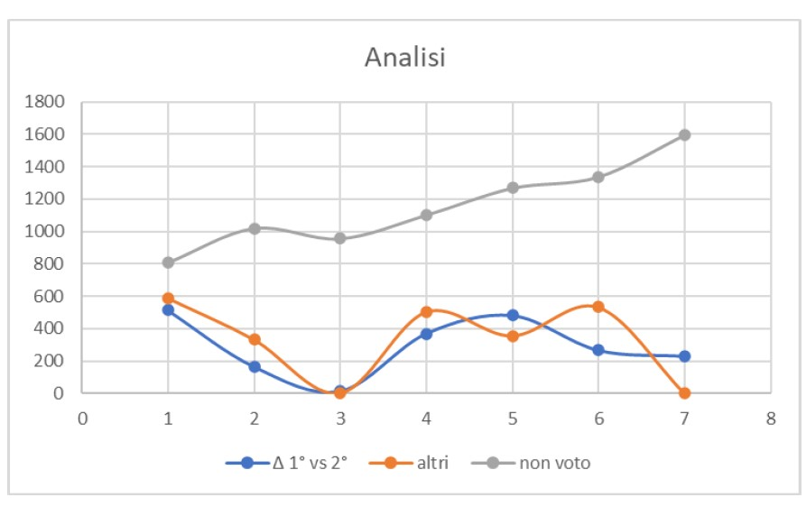
Il Grafico 6 evidenzia come la linea del Delta (differenza di risultato tra primo e secondo candidato) incrocia la linea di risultato di eventuali altri candidati: questo fa ritenere che gli eventuali altri candidati sottraggano voti al secondo arrivato; è vero in alcuni casi ma non in assoluto. Nel caso delle ultime elezioni si sono confrontate 2 sole liste e il delta che ha portato alla vittoria la lista n°1 è stato di 230 voti, a differenza dell’unico altro caso simile del 2004 dove il delta è stato di soli 15 voti.
Considerazioni.
Il numero dei non votanti è tendenzialmente in crescita, come evidenzia il grafico 6: a quelle del 2019 erano 1.336 (29%); all’ultime del 2024 crescono a 1594 (33%). Restano da approfondire le questioni già sollevate nel precedente articolo. Come abbiamo visto la questione degli iscritti Aire, non risponde – anche forzando il dato – al nucleo del problema: c’è una tendenza verso l’astensione, in termini assoluti e percentuali. Il peso dell’astensione – in termini percentuali – è quindi tendenzialmente in crescita, come evidenziato dal Grafico 7.
Grafico 7
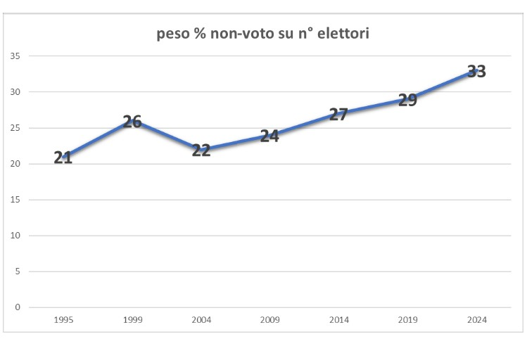
I grafici (8 e 9) a “torta”, relativi alle Comunali del 2019 e del 2024, evidenziano visivamente il “peso” delle singole scelte di voto, e di non-voto: ovviamente è fuori discussione l’esito, ma qualche riflessione – ancora una volta - va fatta sul peso del non voto.

Per quanto attiene l’elezione diretta del sindaco, con gli ultimi dati introduciamo un’analisi quantitativa sull’espressione di voto in un arco temporale abbastanza ampio (1995-2024) e su 7 tornate elettorali. I dati ci consentono di stilare la seguente graduatoria, secondo la percentuale di voti ottenuti sui voti espressi:

Il dato territoriale.
Con le ultime elezioni abbiamo anche i dati territoriali, sui quali è possibile fare ulteriori considerazioni. (Tabella 5)
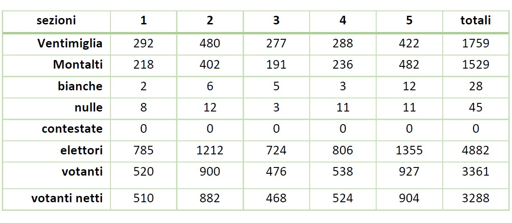
Le sezioni 1 e 3 sono allocate a Villapiana Centro, la 4 a Villapiana Scalo, mentre la 2 e la 5 a Villapiana Lido. La 2 e la 5 sono anche le più numerose (2567 = 52,60%); a Villapiana Centro gli elettori sono 1509 = 30,90%; a Villapiana Scalo gli 806 elettori corrispondono al 16,50%. Diamo uno sguardo all’astensione dal punto di vista territoriale (Tabella 6):
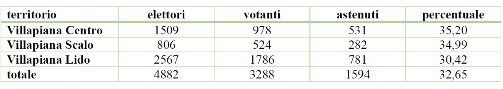
Possiamo anche vedere le espressioni di voto per territorio; intanto le percentuali per il candidato a sindaco per sezione:
Tabella 7
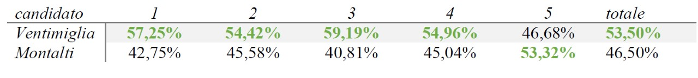
E per centro abitato:
Tabella 8
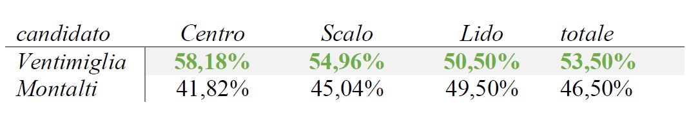
Conclusioni parziali e - ancora - aperte
I dati sull’astensionismo – anche se certamente non riconducibile precipuamente al nostro territorio -risulta essere in crescita tendenziale e quindi oltremodo preoccupante. Il dato – è vero – è di tendenza nazionale; tuttavia qui vorremmo poterlo affrontare in una prospettiva dinamica e attiva di coinvolgimento dei cittadini, al di là quindi delle loro scelte “politiche”. Ci interessa il loro grado di interesse nella cosa pubblica. Da questo punto di vista questo lavoro è solo all’inizio.
L’analisi numerica ci dice anche che:
- In termini generali il risultato elettorale registra una chiara volontà di cambiamento da parte dei cittadini; leggiamo la volontà di cambiamento non solo nell’esito finale (il risultato), ma anche il tutto il processo propedeutico: candidature a sindaco, formazione delle liste e campagna elettorale comprese; cambiamento che adesso dovrà essere interpretato nell’agire amministrativo di chi ha vinto le elezioni.
- I dati territoriali segnalano inoltre: a) Villapiana Centro chiede più attenzione, e ha bisogno di “cura”; non è un caso, infatti che i bravissimi ragazzi del Comitato Villapiana in Festa abbiano intessuto la “scalinata dell’amore” con il testo di La Cura dell’indimenticato maestro Franco Battiato (fra le migliori canzoni mai scritte al mondo); b) Villapiana Lido e Scalo chiedono di essere ascoltate e aiutate nelle loro espressioni imprenditoriali sulla via dell’innovazione.
La discussione quindi resta aperta sul come sollecitare la partecipazione dei cittadini alla vita sociale e politica della comunità villapianese. È su questi aspetti che l’Associazione Villapiana Borgo Attivo intende aprire un dibattito – attraverso una serie di iniziative pubbliche - che possa portare ad azioni di Cittadinanza Attiva in direzione di un’Amministrazione Condivisa del Bene Comune.
Il prossimo appuntamento – su questo sito web – è uno studio preliminare di aspetti economici e sociali di conoscenza su base certa (dati ISTAT) dal quale partire per affrontare ragionamenti progettuali di politica sociale territoriale. Possiamo per il momento accennare – come dato di partenza – che il reddito IRPEF pro-capite dichiarato nel 2022 dei villapianesi era di € 13.599,21 (media imponibile per 3.654 dichiaranti) e di €9.096,01 su 5.463 residenti. Dati di rilevanza saranno la composizione anagrafica (infanzia-giovani-anziani) e sociale (occupati-inoccupati-pensionati). Ne conseguirà un programma di analisi dei bisogni dei cittadini, nella loro diversificata configurazione.
31 agosto 2024
Antonio Bria
Appendice
Elettori residenti all’estero, dettaglio (Febbraio 2024):
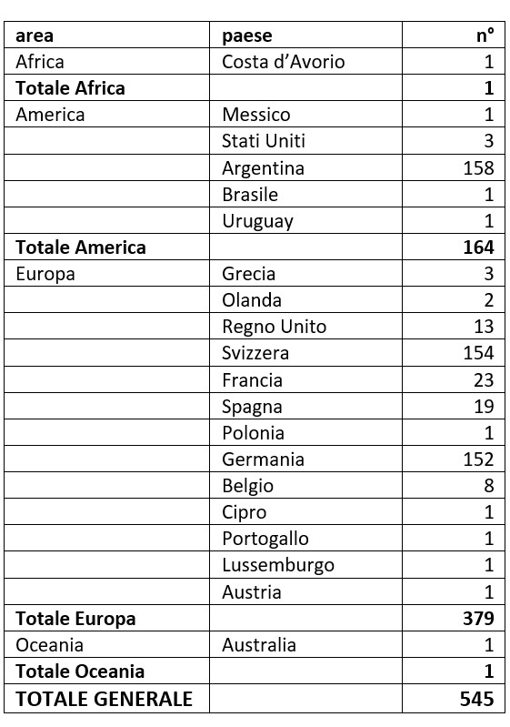
Note a pie di pagina
1 A proposito di precisione, segnalo che questo è il dato del Comune di Villapiana, mentre il Ministero degli Interni riporta 4.881 (1 in meno).
2 Si veda l’Appendice per il dettaglio.
3 Risulta interessante un confronto con altre realtà a noi vicine, o anche distanti con analoghe caratteristiche numeriche o anche differenti, per esempio medie e grandi città. A titolo esemplificativo il corpo elettorale della Città di Bologna è alle comunali di 306.240 (2021) mentre alle politiche di 287.417 (Camera 2022), con una differenza di 18.823 pari al 6,1%; il Comune di Trebisacce (affine alla nostra realtà) ha un corpo elettorale alle comunali di 8.116 (2024) mentre alle politiche del 2022 era di 6.883, con una differenza di 1.233 pari al 15,1%.